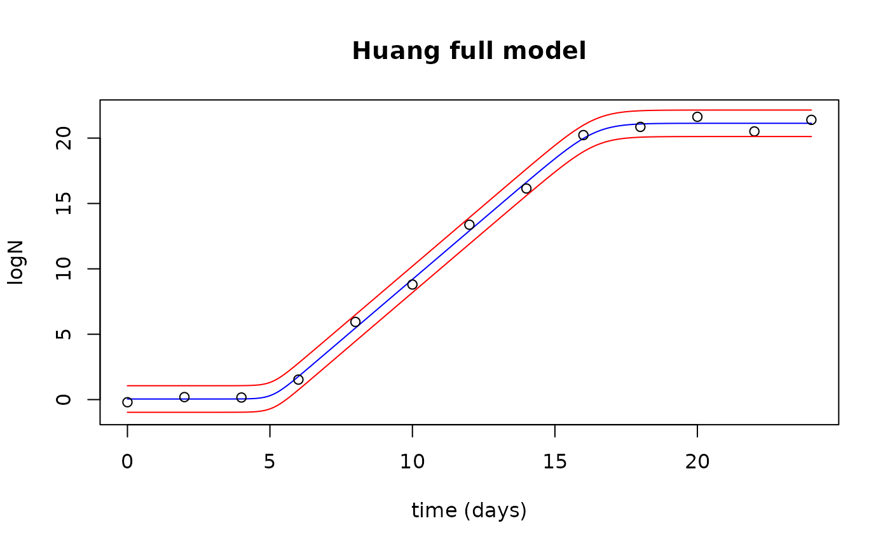
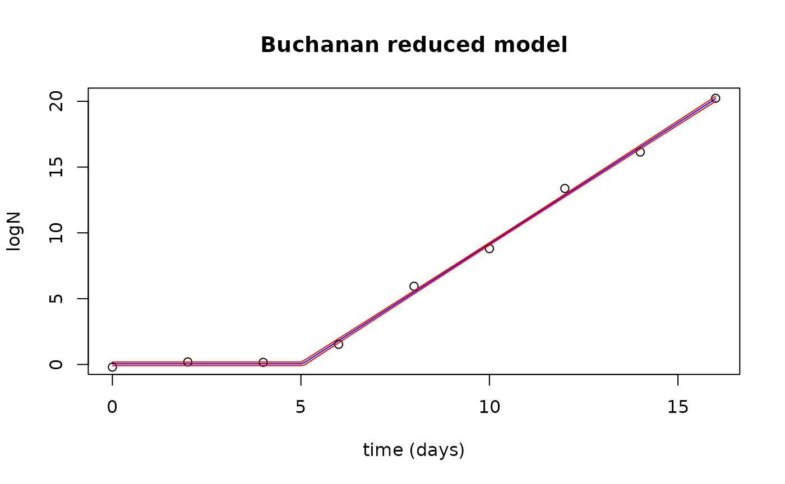
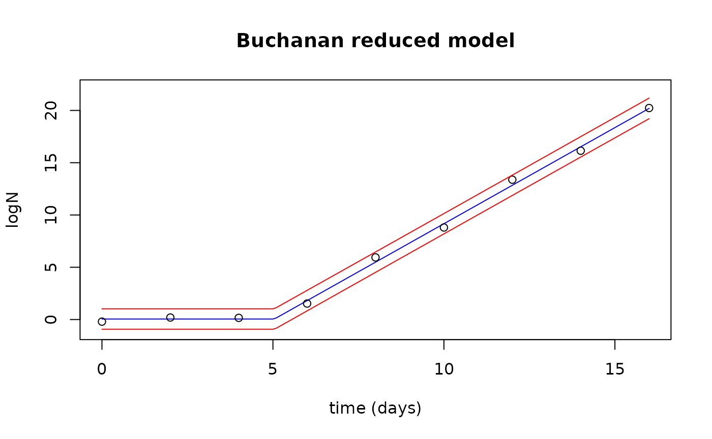

Fitting growth models using predmicror
Vasco Cadavez
Ursula Gonzales Barron
2022/04/30
Source:vignettes/growth_models.Rmd
growth_models.RmdIn this tutorial we will explain how to fit primary growth models to
experimental data. For this lab, we will use the predmicror
R package developed to accommodate all the functions we are being using
in predictive microbiology workshops. The predmicror
package is outside the base R functions, and the first step is load the
predmicror, package with the principal predictive microbial
growth models, and gslnls which is a package to fit
non-linear models using non-linear least squares.
##
## Please cite the 'predmicror' package as:
## Vasco Cadavez and Ursula Gonzales-Barron (2022). predmicror: Fitting predictive microbiology models in r
## If you have questions, suggestions, or comments
## regarding the 'predmicror' package
## https://github.com/fsqanalytics/predmicrorLoading data
To conduct statistical analyses, we need to import data into R
working environment. The predmicror package has
incorporated datasets, and we can use the data() function
to load the example datasets to the working environment. Thus, we will
start by fitting a full growth model to experimental data, thus we load
the growthfull.Rda dataset which is part of the
predmicror package.
data(growthfull)Now the dataset is available in the R environment, and
we can print the entire dataset by typing
growthfull or take a look to the first five lines by using
the head().
growthfull## Time logN lnN
## 1 0 -0.1046 -0.2006
## 2 2 0.0792 0.1922
## 3 4 0.1212 0.1587
## 4 6 0.7344 1.5290
## 5 8 2.5531 5.9421
## 6 10 3.8358 8.8024
## 7 12 5.8476 13.3749
## 8 14 7.1938 16.1457
## 9 16 8.7521 20.2299
## 10 18 9.1119 20.8575
## 11 20 9.3162 21.6272
## 12 22 9.2224 20.5114
## 13 24 9.3019 21.3943
head(growthfull)## Time logN lnN
## 1 0 -0.1046 -0.2006
## 2 2 0.0792 0.1922
## 3 4 0.1212 0.1587
## 4 6 0.7344 1.5290
## 5 8 2.5531 5.9421
## 6 10 3.8358 8.8024For data outer to predmicrorpackage, usually in .csv
format, which are flat text files we use the read.csv()
function to import the CSV file into R environment. Before load a
dataset, its good practice to assure that the dataset is located in the
working directory, thus to import a CSV file called
growthfull.csv into the R environment we do it with the
next code section.
growthfull <- read.csv("growthfull.csv", sep = ";", header = TRUE)We have the dataset in the R environment, thus we can start checking
the data proprieties. For example, the str() function gives
information considering the structure of the variables (numeric,
integer, etc.), and the names() function show us the
variables names.
str(growthfull)## 'data.frame': 13 obs. of 3 variables:
## $ Time: int 0 2 4 6 8 10 12 14 16 18 ...
## $ logN: num -0.1046 0.0792 0.1212 0.7344 2.5531 ...
## $ lnN : num -0.201 0.192 0.159 1.529 5.942 ...
names(growthfull)## [1] "Time" "logN" "lnN"Plotting data
To check the relationship between Time and
lnN, we might use the function plot(), and we
can check the data by visual inspection.
plot(lnN ~ Time,
data = growthfull,
xlab = "Time (hours)", ylab = "ln N",
xlim = c(0, 20), ylim = c(0, 22)
)To save the plot as an .png object, we can use the
png() function.
Fitting the Huang full model
We will start by fitting the Huang full growth model to
experimental data stored in the growthfull dataset. The
Huang full growth model function (Huang()) from the
predmicror package and this function will be fitted to data
non-linear least squares function gsl_nls() implemented in
the gslnls package. First, we need a good guess for the
starting values for the fitting procedure:
start_values <- list(Y0 = 0.02, Ymax = 22, MUmax = 1.6, lag = 5)Now we can fit the model to the data growthfull:
Next, we can check the model parameters:
summary(fit)##
## Formula: lnN ~ HuangFM(Time, Y0, Ymax, MUmax, lag)
##
## Parameters:
## Estimate Std. Error t value Pr(>|t|)
## Y0 0.04562 0.25768 0.177 0.863
## Ymax 21.13232 0.22393 94.372 8.54e-15 ***
## MUmax 1.85942 0.06076 30.601 2.08e-10 ***
## lag 5.07987 0.25000 20.320 7.89e-09 ***
## ---
## Signif. codes: 0 '***' 0.001 '**' 0.01 '*' 0.05 '.' 0.1 ' ' 1
##
## Residual standard error: 0.4444 on 9 degrees of freedom
##
## Number of iterations to convergence: 6
## Achieved convergence tolerance: 7.528e-12
coef(fit)## Y0 Ymax MUmax lag
## 0.04562352 21.13231521 1.85942430 5.07986541The predict() function from the gslnls
package can be used to produce both confidence and prediction intervals
for the prediction of lnN for a given
Time.
newTimes <- data.frame(Time = seq(0, 24, by = 0.1))
fits <- data.frame(predict(fit, newdata = newTimes, interval = "confidence", level = 0.95))
str(fits)## 'data.frame': 241 obs. of 3 variables:
## $ fit: num 0.0456 0.0456 0.0456 0.0456 0.0456 ...
## $ lwr: num -0.0986 -0.0986 -0.0986 -0.0986 -0.0986 ...
## $ upr: num 0.19 0.19 0.19 0.19 0.19 ...
preds <- data.frame(predict(fit, newdata = newTimes, interval = "prediction", level = 0.95))
str(preds)## 'data.frame': 241 obs. of 3 variables:
## $ fit: num 0.0456 0.0456 0.0456 0.0456 0.0456 ...
## $ lwr: num -0.97 -0.97 -0.97 -0.97 -0.97 ...
## $ upr: num 1.06 1.06 1.06 1.06 1.06 ...Plot the observed data with the fitted values and confidence interval
plot(newTimes$Time, fits$fit,
type = "l", col = "blue",
xlab = "time (days)", ylab = "logN",
main = "Huang full model"
)
points(growthfull$Time, growthfull$lnN)
lines(newTimes$Time, fits$upr, col = "red")
lines(newTimes$Time, fits$lwr, col = "red")Plot the observed data with the fitted values and prediction interval
plot(newTimes$Time, fits$fit,
type = "l", col = "blue",
xlab = "time (days)", ylab = "logN", ylim = c(-1, 22), xlim = c(0, 24),
main = "Huang full model"
)
points(growthfull$Time, growthfull$lnN)
lines(newTimes$Time, preds$upr, col = "red")
lines(newTimes$Time, preds$lwr, col = "red")
Fitting the Fang no lag model
First, we want to load the data set:
data(growthnolag)
growthnolag## Time logN lnN
## 1 0 0.7344 1.5290
## 2 2 2.5531 5.9421
## 3 4 3.8358 8.8024
## 4 6 5.8476 13.3749
## 5 8 7.1938 16.1457
## 6 10 8.7521 20.2299
## 7 12 9.1119 20.8575
## 8 14 9.3162 21.6272
## 9 16 9.2224 20.5114
## 10 18 9.3019 21.3943Let’s start with the Fang model, fit the model to the experimental
data using nonlinear least squares function gsl_nls()
implemented in the gsl_nls R package:
start_values <- list(Y0 = 0.01, Ymax = 22, MUmax = 1.6)
fit <- gsl_nls(lnN ~ FangNLM(Time, Y0, Ymax, MUmax),
data = growthnolag,
start = start_values
)
fit## Nonlinear regression model
## model: lnN ~ FangNLM(Time, Y0, Ymax, MUmax)
## data: growthnolag
## Y0 Ymax MUmax
## 1.758 21.132 1.859
## residual sum-of-squares: 1.678
##
## Algorithm: multifit/levenberg-marquardt, (scaling: more, solver: qr)
##
## Number of iterations to convergence: 5
## Achieved convergence tolerance: 1.394e-11Next, we can check the model parameters:
summary(fit)##
## Formula: lnN ~ FangNLM(Time, Y0, Ymax, MUmax)
##
## Parameters:
## Estimate Std. Error t value Pr(>|t|)
## Y0 1.75827 0.36368 4.835 0.00189 **
## Ymax 21.13234 0.24673 85.650 7.79e-12 ***
## MUmax 1.85922 0.06619 28.091 1.86e-08 ***
## ---
## Signif. codes: 0 '***' 0.001 '**' 0.01 '*' 0.05 '.' 0.1 ' ' 1
##
## Residual standard error: 0.4896 on 7 degrees of freedom
##
## Number of iterations to convergence: 5
## Achieved convergence tolerance: 1.394e-11Next, we can extract the model parameters and apply the model to new data
newTimes <- data.frame(Time = seq(0, 18, by = 0.1))
fits <- data.frame(predict(fit, newdata = newTimes, interval = "confidence", level = 0.95))
str(fits)## 'data.frame': 181 obs. of 3 variables:
## $ fit: num 1.76 1.94 2.13 2.32 2.5 ...
## $ lwr: num 1.53 1.72 1.91 2.1 2.29 ...
## $ upr: num 1.99 2.17 2.35 2.53 2.72 ...
preds <- data.frame(predict(fit, newdata = newTimes, interval = "prediction", level = 0.95))Plot the observed data with the fitted values and confidence interval
plot(newTimes$Time, fits$fit,
type = "l", col = "blue",
xlab = "time (days)", ylab = "logN",
main = "Fang no lag model"
)
points(growthnolag$Time, growthnolag$lnN)
lines(newTimes$Time, fits$upr, col = "red")
lines(newTimes$Time, fits$lwr, col = "red")Plot the observed data with the fitted values and prediction interval
Fitting the Buchanan reduced model
First, we want to load the data set:
data(growthred)
growthred## Time logN lnN
## 1 0 -0.1046 -0.2006
## 2 2 0.0792 0.1922
## 3 4 0.1212 0.1587
## 4 6 0.7344 1.5290
## 5 8 2.5531 5.9421
## 6 10 3.8358 8.8024
## 7 12 5.8476 13.3749
## 8 14 7.1938 16.1457
## 9 16 8.7521 20.2299Let’s start with the Buchanan model, fit the model to the
experimental data using nonlinear least squares function
gsl_nls() implemented in the gslnls R
package:
start_values <- list(Y0 = 0.01, MUmax = 1.6, lag = 5)
fit <- gsl_nls(lnN ~ BuchananRM(Time, Y0, MUmax, lag),
data = growthred,
start = start_values
)Next, we can check the model parameters:
summary(fit)##
## Formula: lnN ~ BuchananRM(Time, Y0, MUmax, lag)
##
## Parameters:
## Estimate Std. Error t value Pr(>|t|)
## Y0 0.05010 0.22810 0.22 0.833
## MUmax 1.83840 0.04722 38.93 1.92e-08 ***
## lag 5.04160 0.21567 23.38 4.02e-07 ***
## ---
## Signif. codes: 0 '***' 0.001 '**' 0.01 '*' 0.05 '.' 0.1 ' ' 1
##
## Residual standard error: 0.3951 on 6 degrees of freedom
##
## Number of iterations to convergence: 3
## Achieved convergence tolerance: 5.878e-11Next, we can extract the model parameters and apply the model to new data
newTimes <- data.frame(Time = seq(0, 16, by = 0.1))
fits <- data.frame(predict(fit, newdata = newTimes, interval = "confidence", level = 0.95))
str(fits)## 'data.frame': 161 obs. of 3 variables:
## $ fit: num 0.0501 0.0501 0.0501 0.0501 0.0501 ...
## $ lwr: num -0.0853 -0.0853 -0.0853 -0.0853 -0.0853 ...
## $ upr: num 0.185 0.185 0.185 0.185 0.185 ...
preds <- data.frame(predict(fit, newdata = newTimes, interval = "prediction", level = 0.95))Plot the observed data with the fitted values and confidence interval
plot(newTimes$Time, fits$fit,
type = "l", col = "blue",
xlab = "time (days)", ylab = "logN",
main = "Buchanan reduced model"
)
points(growthred$Time, growthred$lnN)
lines(newTimes$Time, fits$upr, col = "red")
lines(newTimes$Time, fits$lwr, col = "red")
Plot the observed data with the fitted values and prediction interval
plot(newTimes$Time, fits$fit,
type = "l", col = "blue",
xlab = "time (days)", ylab = "logN", ylim = c(-1, 22), xlim = c(0, 16),
main = "Buchanan reduced model"
)
points(growthred$Time, growthred$lnN)
lines(newTimes$Time, preds$upr, col = "red")
lines(newTimes$Time, preds$lwr, col = "red")